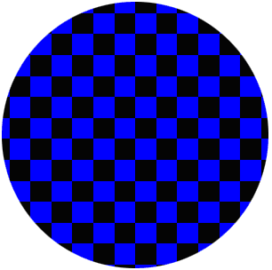
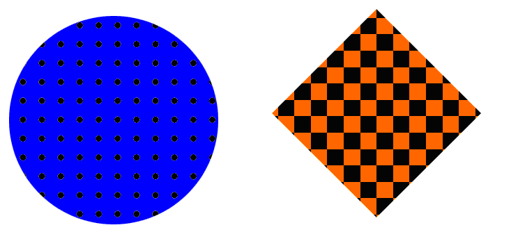

<!doctype html>
<html>
<head>
    <title>My experiment</title>
    <script src="https://ajax.googleapis.com/ajax/libs/jquery/1.11.1/jquery.min.js"></script>
    <script src="jquery.fittext.js"></script>
    <script src="sweetalert.min.js"></script>
    <script src="jspsych-5.0.3/jspsych.js"></script>
    <script src="jspsych-5.0.3/plugins/jspsych-text.js"></script>
    <script src="jspsych-5.0.3/plugins/jspsych-instructions.js"></script>
    <script src="jspsych-5.0.3/plugins/jspsych-single-stim.js"></script>
    <script src="jspsych-5.0.3/plugins/jspsych-same-different.js"></script>
    <script src="jspsych-5.0.3/plugins/jspsych-survey-multi-choice.js"></script>
    <script src="jspsych-5.0.3/plugins/jspsych-survey-likert.js"></script>
    <script src="jspsych-5.0.3/plugins/jspsych-survey-text.js"></script>
    <script src="jspsych-5.0.3/plugins/jspsych-survey-text-no-notification.js"></script>
    <script src="jspsych-5.0.3/plugins/jspsych-survey-text-number.js"></script>

    <link href="jspsych-5.0.3/css/jspsych.css" rel="stylesheet" type="text/css"/>
    <link rel="stylesheet" type="text/css" href="sweetalert/sweetalert/dist/sweetalert.css"/>
</head>
<body>
<p id='load'></p>
</body>

<script>

    jQuery(".jspsych-display-element").fitText();
    /* define welcome message block */
    /* define instructions block */

    //Bug - Happens when you don't give any keyboard input

    //GUID should be date YYYYMMDD_5 digit random code
    function guid() {

        var today = new Date();
        var dd = today.getDate();
        var mm = today.getMonth()+1; //January is 0!
        var yyyy = today.getFullYear();

        if(dd<10) {
            dd='0'+dd
        }

        if(mm<10) {
            mm='0'+mm
        }

        var code = Math.floor(1000 + Math.random() * 9000);
        return mm+''+dd+''+yyyy + '_'+ code
    }


    function ConvertToCSV(objArray) {
        var array = typeof objArray != 'object' ? JSON.parse(objArray) : objArray;
        //var str = 'sub ID, presentation Order, trialNumber, targetImage, probeImage, pressedKeyNum, pressedKeyName, RT, medium, mediumCode, accuracy, accuracyCode\r\n';
        var str = '';
        for (var i = 0; i < array.length; i++) {
            var line = '';
            for (var index in array[i]) {
                if (line != '') line += ','

                line += array[i][index];
            }

            str += line + '\r\n';
        }

        return str;
    }

    function Trial(subid, qid, order, trialNum, TargetImage, ProbeImage, pressedKeyNum, pressedKeyName, RT, medium, mediumCode, accuracy, accuracyCode ) {
        this.subid = subid;
        this.qid = qid;
        this.order = order;
        this.trialNum = trialNum;
        this.TargetImage = TargetImage;
        this.ProbeImage = ProbeImage;
        this.pressedKeyNum = pressedKeyNum;
        this.pressedKeyName = pressedKeyName;
        this.RT = RT;
        this.medium = medium;
        this.mediumCode = mediumCode;
        this.accuracy = accuracy;
        this.accuracyCode = accuracyCode;
    }
    function ConvertToCSVdemographics(objArray) {
        var array = typeof objArray != 'object' ? JSON.parse(objArray) : objArray;
        //var str = 'sub ID, q1, q2, q3, q4, q5, q6, q7, verbal accuracy, visual accuracy\r\n';
        var str = '';
        for (var i = 0; i < array.length; i++) {
            var line = '';
            for (var index in array[i]) {
                if (line != '') line += ','

                line += array[i][index];
            }

            str += line + '\r\n';
        }

        return str;
    }

    function Demographics(subid, Q1, Q2, Q3, Q4, Q5, Q6, Q7, Q8, Q9, Q10) {
        this.subid = subid;
        this.Q1 = Q1;
        this.Q2 = Q2;
        this.Q3 = Q3;
        this.Q4 = Q4;
        this.Q5 = Q5;
        this.Q6 = Q6;
        this.Q7 = Q7;
        this.Q8 = Q8;
        this.Q9 = Q9;
        this.Q10 = Q10;

    }

    function ConvertToCSVsurvey(objArray) {
        var array = typeof objArray != 'object' ? JSON.parse(objArray) : objArray;
        //var str = '';
        //var str = "sub ID, vvq1 Please rate your visual abilities., vvq2 Please rate your spatial abilities., sblsq3 I prefer to learn visually., sblsq4 I prefer to learn verbally., sblsq5 I am a visual learner., sblsq6 I am a verbal learner., sblsq7 I am good at learning from labeled pictures illustrations graphs maps and animations., sblsq8 I am good at learning from printed text., vviq9 I enjoy doing work that requires the use of words., vviq10 There are some special times in my life that I like to relieve by mentally 'picturing' just how everything looked., vviq11 I can never seem to find the right word when I need it., vviq12 I do a lot of reading., vviq13 When I'm trying to learn something new I'd rather watch a demonstration than read how to do it., vviq14 I think I often use words in the wrong way., vviq15 I enjoy learning new words., vviq16 I like to picture how I could fix up my apartment or a room if I could buy anything I wanted., vviq17 I often make written notes to myself., vviq18 I like to daydream., vviq19 I generally prefer to use a diagram rather than a written set of instructions., vviq20 I like to doodle., vviq21 I find it helps to think in terms of mental pictures when doing many things., vviq22 After I meet someone for the first time I can usually remember what they look like but not much about them., vviq23 I like to think of synonyms for words., vviq24 When I have forgotten something I frequently try to form a mental picture to remember it., vviq25 I like learning new words., vviq26 I prefer to read instructions about how to do something rather than have someone show me., vviq27 I prefer activities that don't require a lot of reading., vviq28 I seldom daydream., vviq29 I spend very little time attempting to increase my vocabulary., vviq30 My thinking often consists of mental pictures or images., Feedback\r\n";
        var str = '';
        for (var i = 0; i < array.length; i++) {
            var line = '';
            for (var index in array[i]) {
                if (line != '') line += ','

                line += array[i][index];
            }

            str += line + '\r\n';
        }

        return str;
    }

    function Survey(subid, q1, q2, q3, q4, q5, q6, q7, q8, q9, q10, q11, q12, q13, q14, q15, q16, q17, q18, q19, q20, q21, q22, q23, q24, q25,q26, q27, q28, q29, q30, text) {
        this.subid = subid;
        this.q1=q1
        this.q2=q2
        this.q3=q3
        this.q4=q4
        this.q5=q5
        this.q6=q6
        this.q7=q7
        this.q8=q8
        this.q9=q9
        this.q10=q10
        this.q11=q11
        this.q12=q12
        this.q13=q13
        this.q14=q14
        this.q15=q15
        this.q16=q16
        this.q17=q17
        this.q18=q18
        this.q19=q19
        this.q20=q20
        this.q21=q21
        this.q22=q22
        this.q23=q23
        this.q24=q24
        this.q25=q25
        this.q26=q26
        this.q27=q27
        this.q28=q28
        this.q29=q29
        this.q30=q30
        this.text = text;
    }

    function getSubjectData() {

        var trials = jsPsych.data.getTrialsOfType('same-different');

        var sum_rt = 0;
        var correct_trial_count = 0;
        var correct_trial_count_word = 0;
        var correct_trial_count_picture = 0;
        var correct_rt_count = 0;

        var length = trials.length/2
        for (var i = 0; i < trials.length; i++) {
            if (trials[i].correct == true) {

                correct_trial_count++;
                var trial = trials[i].stimulus
                var trial_type = trial.charAt(13)
                if (trial_type == "w") {
                    correct_trial_count_word++;
                }
                if (trial_type == "t") {
                    correct_trial_count_picture++;
                }
                if(trials[i].rt > -1){
                    sum_rt += trials[i].rt;
                    correct_rt_count++;
                }
            }
        }

        return {
            rt: Math.floor(sum_rt / correct_rt_count),
            word_accuracy: Math.floor(correct_trial_count_word / length * 100),
            picture_accuracy: Math.floor(correct_trial_count_picture / length * 100)
        }
    }

    var guid = guid();

    jsPsych.data.addProperties({
        subject: guid
    });

    var welcome_block = {
        type: 'instructions',
        pages:[
            "<p>Welcome!</p> " +
            "<p>In this study, you will complete a simple task in which you will be asked to select a picture or word that is similar to the original.</p>" +
            "<p>In addition to the task, there are some questions about your beliefs, attitudes, opinions, and some standard demographic questions.</p>" +
            "<p>This study should take about 15 minutes to complete. At the end, you will recieve your result along with a PIN code. You will input this PIN code in the MTurk page to recieve your payment.</p>" +
            "<p>We thank you for being here.</p>" +
            "<p><strong>Note: This test contains several questions about your attitudes and beliefs, which are optional. No personally identifying information is collected, and all of the data collected on this site is completely confidential.</strong></p>" +
            "<p>If you wish to proceed and take the test, please click 'next'.</p>"],
        allow_keys: false,
        show_clickable_nav: true
    }

    var instructions_block = {
        type: "instructions",
        pages: ["<p style='font-size:0.8em;text-align:center;'>Page 1 of 3</p>" +
        "<p>In this first task, you will see an item that has three features: shape, color, and texture.</p> " +
        "<p>Subsequently, the item will disappear and you will see two items. One item shares <strong>two features</strong> with the original item, and the other shares only <strong>one feature</strong>.</p>" +
        "<p>Your task is to determine which of the two items is <strong>MORE SIMILAR</strong> to the original.</p>" +
        "<p>Please use the <strong>right arrow</strong> and the <strong>left arrow</strong> keys to select the picture or word that is more similar to the original item.</p> " +
        "" +
        "<p>For example, this picture is <strong>blue, heart, and spirals</strong>.</p>",
            "<p style='font-size:0.8em;text-align:center;'>Page 2 of 3</p>" +
            "" +
            "<p>In this example, the left item is similar to the original item in two features,<strong>color and shape</strong>, whereas the right item is similar to the original item only in one feature, <strong>texture</strong>.</p>"+
            "<p>Therefore, you should press the <strong>left arrow key</strong> to indicate that the left item is more similar to the original item than the right item.</p>",
            "<p style='font-size:0.8em;text-align:center;'>Page 3 of 3</p>" +
            "<p>Sometimes the item will appear as pictures, whereas in other times, they will appear as words.</p>" +
            "<p>Whether you make a choice fast or slow, <strong>the items will disappear after a few seconds.</strong></p>" +
            "<p>Accuracy and speed are both important, <strong>so try to answer as fast as possible without making mistakes.</strong></p>" +
            "<p>Please start the task whenever you are ready.</p><br><br><br><br><br><br><br><br><br><br><br>"],
        allow_keys: false,
        show_clickable_nav: true

    };

    var start_block = {
        type: 'text',
        text: '<p style="text-align:center;position: relative; top: 50%;-webkit-transform: translateY(-50%);-ms-transform: translateY(-50%); transform: translateY(-50%);">Please put your fingers on the left arrow and right arrow key on your keyboard. <br> Press the <strong>right arrow</strong> key when you are ready to start.</p>',
        cont_key: [39]
    }

    var block = {
        type: 'same-different',

        same_key: 37,
        different_key: 39,
        //timing_first_stim: 2300,
        timing_second_stim: 3500,
        //timing_response: 10000,
        timeline: [
            /*Put everything in the center*/
            /*Bolder plus*/
            /*Word with words, picture with pictures*/
            /*Double check if errors*/
            {stimuli: ['ImageFiles/t1.bmp', 'ImageFiles/p1.bmp'], answer: 'same'},
            {stimuli: ['ImageFiles/wt1.bmp', 'ImageFiles/wp1.bmp'], answer: 'same'},
            {stimuli: ['ImageFiles/t2.bmp', 'ImageFiles/p2.bmp'], answer: 'same'},
            {stimuli: ['ImageFiles/wt2.bmp', 'ImageFiles/wp2.bmp'], answer: 'same'},
            {stimuli: ['ImageFiles/t3.bmp', 'ImageFiles/p3.bmp'], answer: 'same'},
            {stimuli: ['ImageFiles/wt3.bmp', 'ImageFiles/wp3.bmp'], answer: 'same'},
            {stimuli: ['ImageFiles/t4.bmp', 'ImageFiles/p4.bmp'], answer: 'same'},
            {stimuli: ['ImageFiles/wt4.bmp', 'ImageFiles/wp4.bmp'], answer: 'same'},
            {stimuli: ['ImageFiles/t5.bmp', 'ImageFiles/p5.bmp'], answer: 'same'},
            {stimuli: ['ImageFiles/wt5.bmp', 'ImageFiles/wp5.bmp'], answer: 'same'},
            {stimuli: ['ImageFiles/t6.bmp', 'ImageFiles/p6.bmp'], answer: 'different'},
            {stimuli: ['ImageFiles/wt6.bmp', 'ImageFiles/wp6.bmp'], answer: 'different'},
            {stimuli: ['ImageFiles/t7.bmp', 'ImageFiles/p7.bmp'], answer: 'different'},
            {stimuli: ['ImageFiles/wt7.bmp', 'ImageFiles/wp7.bmp'], answer: 'different'},
            {stimuli: ['ImageFiles/t8.bmp', 'ImageFiles/p8.bmp'], answer: 'different'},
            {stimuli: ['ImageFiles/wt8.bmp', 'ImageFiles/wp8.bmp'], answer: 'different'},
            {stimuli: ['ImageFiles/t9.bmp', 'ImageFiles/p9.bmp'], answer: 'different'},
            {stimuli: ['ImageFiles/wt9.bmp', 'ImageFiles/wp9.bmp'], answer: 'different'},
            {stimuli: ['ImageFiles/t10.bmp', 'ImageFiles/p10.bmp'], answer: 'different'},
            {stimuli: ['ImageFiles/wt10.bmp', 'ImageFiles/wp10.bmp'], answer: 'different'},
            {stimuli: ['ImageFiles/t11.bmp', 'ImageFiles/p11.bmp'], answer: 'same'},
            {stimuli: ['ImageFiles/wt11.bmp', 'ImageFiles/wp11.bmp'], answer: 'same'},
            {stimuli: ['ImageFiles/t12.bmp', 'ImageFiles/p12.bmp'], answer: 'same'},
            {stimuli: ['ImageFiles/wt12.bmp', 'ImageFiles/wp12.bmp'], answer: 'same'},
            {stimuli: ['ImageFiles/t13.bmp', 'ImageFiles/p13.bmp'], answer: 'same'},
            {stimuli: ['ImageFiles/wt13.bmp', 'ImageFiles/wp13.bmp'], answer: 'same'},
            {stimuli: ['ImageFiles/t14.bmp', 'ImageFiles/p14.bmp'], answer: 'same'},
            {stimuli: ['ImageFiles/wt14.bmp', 'ImageFiles/wp14.bmp'], answer: 'same'},
            {stimuli: ['ImageFiles/t15.bmp', 'ImageFiles/p15.bmp'], answer: 'same'},
            {stimuli: ['ImageFiles/wt15.bmp', 'ImageFiles/wp15.bmp'], answer: 'same'},
            {stimuli: ['ImageFiles/t16.bmp', 'ImageFiles/p16.bmp'], answer: 'different'},
            {stimuli: ['ImageFiles/wt16.bmp', 'ImageFiles/wp16.bmp'], answer: 'different'},
            {stimuli: ['ImageFiles/t17.bmp', 'ImageFiles/p17.bmp'], answer: 'different'},
            {stimuli: ['ImageFiles/wt17.bmp', 'ImageFiles/wp17.bmp'], answer: 'different'},
            {stimuli: ['ImageFiles/t18.bmp', 'ImageFiles/p18.bmp'], answer: 'different'},
            {stimuli: ['ImageFiles/wt18.bmp', 'ImageFiles/wp18.bmp'], answer: 'different'},
            {stimuli: ['ImageFiles/t19.bmp', 'ImageFiles/p19.bmp'], answer: 'different'},
            {stimuli: ['ImageFiles/wt19.bmp', 'ImageFiles/wp19.bmp'], answer: 'different'},
            {stimuli: ['ImageFiles/t20.bmp', 'ImageFiles/p20.bmp'], answer: 'different'},
            {stimuli: ['ImageFiles/wt20.bmp', 'ImageFiles/wp20.bmp'], answer: 'different'},
            {stimuli: ['ImageFiles/t21.bmp', 'ImageFiles/p21.bmp'], answer: 'same'},
            {stimuli: ['ImageFiles/wt21.bmp', 'ImageFiles/wp21.bmp'], answer: 'same'},
            {stimuli: ['ImageFiles/t22.bmp', 'ImageFiles/p22.bmp'], answer: 'same'},
            {stimuli: ['ImageFiles/wt22.bmp', 'ImageFiles/wp22.bmp'], answer: 'same'},
            {stimuli: ['ImageFiles/t23.bmp', 'ImageFiles/p23.bmp'], answer: 'different'},
            {stimuli: ['ImageFiles/wt23.bmp', 'ImageFiles/wp23.bmp'], answer: 'different'},
            {stimuli: ['ImageFiles/t24.bmp', 'ImageFiles/p24.bmp'], answer: 'different'},
            {stimuli: ['ImageFiles/wt24.bmp', 'ImageFiles/wp24.bmp'], answer: 'different'},
        ],
        randomize_order: true


    }

    var sex_question = ["What is your gender?"]
    var sex_options = ["Male", "Female", "N/A"]

    var multi_choice_block_sex = {
        preamble: "<p style='font-size:0.8em;text-align:center;'>Page 1 of 8</p>",
        type: 'survey-multi-choice',
        questions: sex_question,
        options: [sex_options],  // need one scale for every question on a page
        required: [false]   // set whether questions are required
        // horizontal: true  // centres questions and makes options display horizontally
    };

    var age_questions = ["What is your age?"]

    var age_options = ["Under 18 years", "18 to 24 Years", "25 to 34 Years", "35 to 44 Years", "45 to 54 Years", "55 to 64 Years", "Age 65 or older"]

    var block_age = {
        type: 'survey-text-number',
        questions: ["What is your age? Please only put numbers."]
    };

    var multi_choice_block_age = {
        preamble: "<p style='font-size:0.8em;text-align:center;'>Page 2 of 8</p>",
        type: 'survey-multi-choice',
        questions: age_questions,
        options: [age_options],  // need one scale for every question on a page
        required: [false]   // set whether questions are required
        // horizontal: true  // centres questions and makes options display horizontally
    };

    var lang_questions = ["Are you a native English speaker? (You will be paid regardless of your answer, so please be honest.)"]

    var lang_options = ["Yes", "No"]

    var multi_choice_block_lang = {
        preamble: "<p style='font-size:0.8em;text-align:center;'>Page 3 of 8</p>",
        type: 'survey-multi-choice',
        questions: lang_questions,
        options: [lang_options],  // need one scale for every question on a page
        required: [false]   // set whether questions are required
        // horizontal: true  // centres questions and makes options display horizontally
    };


    var part_questions = ["Have you participated in this study before? (You will be paid regardless of your answer, so please be honest.)"]

    var part_options = ["Yes", "No"]

    var multi_choice_block_part = {
        preamble: "<p style='font-size:0.8em;text-align:center;'>Page 4 of 8</p>",
        type: 'survey-multi-choice',
        questions: part_questions,
        options: [part_options],  // need one scale for every question on a page
        required: [false]   // set whether questions are required
        // horizontal: true  // centres questions and makes options display horizontally
    };

    var race_questions1 = ["What is your race?"]

    // definiting two different response scales that can be used.
    var race1_options = ["American Indian/Alaska Native", "East Asian", "South Asian", "Black or African American", "Native Hawaiian or other Pacific Islander", "Hispanic", "White", "Other or Unknown", "Multiracial"];


    var multi_choice_block_race1 = {
        preamble: "<p style='font-size:0.8em;text-align:center;'>Page 5 of 8</p>",
        type: 'survey-multi-choice',
        questions: race_questions1,
        options: [race1_options],  // need one scale for every question on a page
        required: [false]   // set whether questions are required
        // horizontal: true  // centres questions and makes options display horizontally
    };


    var political_question = ["What is your political identity?"]
    var political_options = ["Strongly Conservative", "Moderately Conservative", "Slightly Conservative", "Slightly Liberal", "Moderately Liberal", "Strongly Liberal"]

    var multi_choice_block_political = {
        preamble: "<p style='font-size:0.8em;text-align:center;'>Page 6 of 8</p>",
        type: 'survey-multi-choice',
        questions: political_question,
        options: [political_options],  // need one scale for every question on a page
        required: [false]   // set whether questions are required
        // horizontal: true  // centres questions and makes options display horizontally
    };


    var religious_question2 = ["How religious do you consider yourself to be?"]
    var religious2_options = ["Strongly religious", "Moderately religious", "Slightly religious", "Slightly non-religious", "Moderately non-religious", "Strongly non-religious"]

    var multi_choice_block_religious2 = {
        preamble: "<p style='font-size:0.8em;text-align:center;'>Page 7 of 8</p>",
        type: 'survey-multi-choice',
        questions: religious_question2,
        options: [religious2_options],  // need one scale for every question on a page
        required: [false, false]   // set whether questions are required
        // horizontal: true  // centres questions and makes options display horizontally
    };

    var education_question = ["Please indicate the highest level of education that you have completed."]
    var education_options = ["Elementary school", "Junior high school or Middle school", "Some high school", "High school graduate", "Some college", "Associate's degree", "Bachelor's degree", "Some graduate school", "Master's Degree", "Other advanced degree"]
    var multi_choice_block_education = {
        preamble: "<p style='font-size:0.8em;text-align:center;'>Page 8 of 8</p>",
        type: 'survey-multi-choice',
        questions: education_question,
        options: [education_options],  // need one scale for every question on a page
        required: [false, false]   // set whether questions are required
        // horizontal: true  // centres questions and makes options display horizontally
    };


    var vv_question1 = ["Please rate your visual abilities."];
    var vv_question2 = ["Please rate your verbal abilities."]

    var vv_options = ["Very low", "Somewhat low", "Average", "Somewhat high", "Very high"];

    var multi_choice_block_vv1 = {
        preamble: "<p style='font-size:0.8em;text-align:center;'>Page 1 of 30</p>",
        type: 'survey-likert',
        questions: vv_question1,
        labels: [vv_options],  // need one scale for every question on a page
        required: [false]   // set whether questions are required
    };

    var multi_choice_block_vv2 = {
        preamble: "<p style='font-size:0.8em;text-align:center;'>Page 2 of 30</p>",
        type: 'survey-likert',
        questions: vv_question2,
        labels: [vv_options],  // need one scale for every question on a page
        required: [false]   // set whether questions are required
    };

    var sblsq1 = ["I prefer to learn visually."]
    var sblsq2 = ["I prefer to learn verbally."]
    var sblsq3 = ["I am a visual learner."]
    var sblsq4 = ["I am a verbal learner."]
    var sblsq5 = ["I am good at learning from labeled pictures, illustrations, graphs, maps, and animations."]
    var sblsq6 = ["I am good at learning from printed text."]


    var sblsq_options = ["Strongly disagree", "Moderately disagree", "Slightly disagree", "Neither agree or disagree", "Slightly agree", "Moderately agree", "Strongly agree"];

    var multi_choice_block_sblsq1 = {
        preamble: "<p style='font-size:0.8em;text-align:center;'>Page 3 of 30</p>",
        type: 'survey-likert',
        questions: sblsq1,
        labels: [sblsq_options],  // need one scale for every question on a page
        required: [false]   // set whether questions are required
    };

    var multi_choice_block_sblsq2 = {
        preamble: "<p style='font-size:0.8em;text-align:center;'>Page 4 of 30</p>",
        type: 'survey-likert',
        questions: sblsq2,
        labels: [sblsq_options],  // need one scale for every question on a page
        required: [false]   // set whether questions are required
    };

    var multi_choice_block_sblsq3 = {
        preamble: "<p style='font-size:0.8em;text-align:center;'>Page 5 of 30</p>",
        type: 'survey-likert',
        questions: sblsq3,
        labels: [sblsq_options],  // need one scale for every question on a page
        required: [false]   // set whether questions are required
    };

    var multi_choice_block_sblsq4 = {
        preamble: "<p style='font-size:0.8em;text-align:center;'>Page 6 of 30</p>",
        type: 'survey-likert',
        questions: sblsq4,
        labels: [sblsq_options],  // need one scale for every question on a page
        required: [false]   // set whether questions are required
    };

    var multi_choice_block_sblsq5 = {
        preamble: "<p style='font-size:0.8em;text-align:center;'>Page 7 of 30</p>",
        type: 'survey-likert',
        questions: sblsq5,
        labels: [sblsq_options],  // need one scale for every question on a page
        required: [false]   // set whether questions are required
    };

    var multi_choice_block_sblsq6 = {
        preamble: "<p style='font-size:0.8em;text-align:center;'>Page 8 of 30</p>",
        type: 'survey-likert',
        questions: sblsq6,
        labels: [sblsq_options],  // need one scale for every question on a page
        required: [false]   // set whether questions are required
    };


    var vviq1 = ["I enjoy doing work that requires the use of words."]
    var vviq2 = ["There are some special times in my life that I like to relive by mentally 'picturing' just how everything looked."]
    var vviq3 = ["I can never seem to find the right word when I need it."]
    var vviq4 = ["I do a lot of reading."]
    var vviq5 = ["When I'm trying to learn something new, I'd rather watch a demonstration than read how to do it."]
    var vviq6 = ["I think I often use words in the wrong way."]
    var vviq7 = ["I enjoy learning new words."]
    var vviq8 = ["I like to picture how I could fix up my apartment or a room if I could buy anything I wanted."]
    var vviq9 = ["I often make written notes to myself."]
    var vviq10 = ["I like to daydream."]
    var vviq11 = ["I generally prefer to use a diagram rather than a written set of instructions."]
    var vviq12 = ["I like to doodle."]
    var vviq13 = ["I find it helps to think in terms of mental pictures when doing many things."]
    var vviq14 = ["After I meet someone for the first time, I can usually remember what they look like, but not much about them."]
    var vviq15 = ["I like to think of synonyms for words."]
    var vviq16 = ["When I have forgotten something I frequently try to form a mental picture to remember it."]
    var vviq17 = ["I like learning new words."]
    var vviq18 = ["I prefer to read instructions about how to do something rather than have someone show me."]
    var vviq19 = ["I prefer activities that don't require a lot of reading."]
    var vviq20 = ["I seldom daydream."]
    var vviq21 = ["I spend very little time attempting to increase my vocabulary."]
    var vviq22 = ["My thinking often consists of mental pictures or images."]

    var vviq_options = ["Always false", "Usually false", "Usually true", "Always true"];

    var multi_choice_block_vviq1 = {
        preamble: "<p style='font-size:0.8em;text-align:center;'>Page 9 of 30</p>",
        type: 'survey-likert',
        questions: vviq1,
        labels: [vviq_options],  // need one scale for every question on a page
        required: [false]   // set whether questions are required
    };

    var multi_choice_block_vviq2 = {
        preamble: "<p style='font-size:0.8em;text-align:center;'>Page 10 of 30</p>",
        type: 'survey-likert',
        questions: vviq2,
        labels: [vviq_options],  // need one scale for every question on a page
        required: [false]   // set whether questions are required
    };
    var multi_choice_block_vviq3 = {
        preamble: "<p style='font-size:0.8em;text-align:center;'>Page 11 of 30</p>",
        type: 'survey-likert',
        questions: vviq3,
        labels: [vviq_options],  // need one scale for every question on a page
        required: [false]   // set whether questions are required
    };
    var multi_choice_block_vviq4 = {
        preamble: "<p style='font-size:0.8em;text-align:center;'>Page 12 of 30</p>",
        type: 'survey-likert',
        questions: vviq4,
        labels: [vviq_options],  // need one scale for every question on a page
        required: [false]   // set whether questions are required
    };
    var multi_choice_block_vviq5 = {
        preamble: "<p style='font-size:0.8em;text-align:center;'>Page 13 of 30</p>",
        type: 'survey-likert',
        questions: vviq5,
        labels: [vviq_options],  // need one scale for every question on a page
        required: [false]   // set whether questions are required
    };
    var multi_choice_block_vviq6 = {
        preamble: "<p style='font-size:0.8em;text-align:center;'>Page 14 of 30</p>",
        type: 'survey-likert',
        questions: vviq6,
        labels: [vviq_options],  // need one scale for every question on a page
        required: [false]   // set whether questions are required
    };
    var multi_choice_block_vviq7 = {
        preamble: "<p style='font-size:0.8em;text-align:center;'>Page 15 of 30</p>",
        type: 'survey-likert',
        questions: vviq7,
        labels: [vviq_options],  // need one scale for every question on a page
        required: [false]   // set whether questions are required
    };
    var multi_choice_block_vviq8 = {
        preamble: "<p style='font-size:0.8em;text-align:center;'>Page 16 of 30</p>",
        type: 'survey-likert',
        questions: vviq8,
        labels: [vviq_options],  // need one scale for every question on a page
        required: [false]   // set whether questions are required
    };
    var multi_choice_block_vviq9 = {
        preamble: "<p style='font-size:0.8em;text-align:center;'>Page 17 of 30</p>",
        type: 'survey-likert',
        questions: vviq9,
        labels: [vviq_options],  // need one scale for every question on a page
        required: [false]   // set whether questions are required
    };
    var multi_choice_block_vviq10 = {
        preamble: "<p style='font-size:0.8em;text-align:center;'>Page 18 of 30</p>",
        type: 'survey-likert',
        questions: vviq10,
        labels: [vviq_options],  // need one scale for every question on a page
        required: [false]   // set whether questions are required
    };
    var multi_choice_block_vviq11 = {
        preamble: "<p style='font-size:0.8em;text-align:center;'>Page 19 of 30</p>",
        type: 'survey-likert',
        questions: vviq11,
        labels: [vviq_options],  // need one scale for every question on a page
        required: [false]   // set whether questions are required
    };

    var multi_choice_block_vviq12 = {
        preamble: "<p style='font-size:0.8em;text-align:center;'>Page 20 of 30</p>",
        type: 'survey-likert',
        questions: vviq12,
        labels: [vviq_options],  // need one scale for every question on a page
        required: [false]   // set whether questions are required
    };
    var multi_choice_block_vviq13 = {
        preamble: "<p style='font-size:0.8em;text-align:center;'>Page 21 of 30</p>",
        type: 'survey-likert',
        questions: vviq13,
        labels: [vviq_options],  // need one scale for every question on a page
        required: [false]   // set whether questions are required
    };
    var multi_choice_block_vviq14 = {
        preamble: "<p style='font-size:0.8em;text-align:center;'>Page 22 of 30</p>",
        type: 'survey-likert',
        questions: vviq14,
        labels: [vviq_options],  // need one scale for every question on a page
        required: [false]   // set whether questions are required
    };
    var multi_choice_block_vviq15 = {
        preamble: "<p style='font-size:0.8em;text-align:center;'>Page 23 of 30</p>",
        type: 'survey-likert',
        questions: vviq15,
        labels: [vviq_options],  // need one scale for every question on a page
        required: [false]   // set whether questions are required
    };
    var multi_choice_block_vviq16 = {
        preamble: "<p style='font-size:0.8em;text-align:center;'>Page 24 of 30</p>",
        type: 'survey-likert',
        questions: vviq16,
        labels: [vviq_options],  // need one scale for every question on a page
        required: [false]   // set whether questions are required
    };
    var multi_choice_block_vviq17 = {
        preamble: "<p style='font-size:0.8em;text-align:center;'>Page 25 of 30</p>",
        type: 'survey-likert',
        questions: vviq17,
        labels: [vviq_options],  // need one scale for every question on a page
        required: [false]   // set whether questions are required
    };
    var multi_choice_block_vviq18 = {
        preamble: "<p style='font-size:0.8em;text-align:center;'>Page 26 of 30</p>",
        type: 'survey-likert',
        questions: vviq18,
        labels: [vviq_options],  // need one scale for every question on a page
        required: [false]   // set whether questions are required
    };
    var multi_choice_block_vviq19 = {
        preamble: "<p style='font-size:0.8em;text-align:center;'>Page 27 of 30</p>",
        type: 'survey-likert',
        questions: vviq19,
        labels: [vviq_options],  // need one scale for every question on a page
        required: [false]   // set whether questions are required
    };
    var multi_choice_block_vviq20 = {
        preamble: "<p style='font-size:0.8em;text-align:center;'>Page 28 of 30</p>",
        type: 'survey-likert',
        questions: vviq20,
        labels: [vviq_options],  // need one scale for every question on a page
        required: [false]   // set whether questions are required
    };
    var multi_choice_block_vviq21 = {
        preamble: "<p style='font-size:0.8em;text-align:center;'>Page 29 of 30</p>",
        type: 'survey-likert',
        questions: vviq21,
        labels: [vviq_options],  // need one scale for every question on a page
        required: [false]   // set whether questions are required
    };
    var multi_choice_block_vviq22 = {
        preamble: "<p style='font-size:0.8em;text-align:center;'>Page 30 of 30</p>",
        type: 'survey-likert',
        questions: vviq22,
        labels: [vviq_options],  // need one scale for every question on a page
        required: [false]   // set whether questions are required
    };

    var survey_trial = {
        type: 'survey-text',
        questions: ["Is there any feedback for us?"],
        rows: [5],
        columns: [40]
    };

    var debrief_block = {
        type: "text",
        text: function() {
            console.log("here")
            var subject_data = getSubjectData();
            if (subject_data.word_accuracy > subject_data.picture_accuracy) {
                return "<p>Your Unique ID number is <strong>" + guid + "</strong>. Please copy and paste this code to recieve your payment.</p> <p>You are now finished with the experiment. Please close this tab. Thank you!</p>";
            }
            else if (subject_data.word_accuracy == subject_data.picture_accuracy) {
                return "<p>Your Unique ID number is <strong>" + guid + "</strong>. Please copy and paste this code to recieve your payment.</p> <p>You are now finished with the experiment. Please close this tab. Thank you!</p>";
            }
            else {
                return "<p>Your Unique ID number is <strong>" + guid + "</strong>. Please copy and paste this code to recieve your payment.</p> <p>You are now finished with the experiment. Please close this tab. Thank you!</p>";
            }

        },
        cont_key: [39]
    };

    var timeline = [];
    timeline.push(welcome_block);
    timeline.push(instructions_block);
    timeline.push(start_block);
    timeline.push(block);

    timeline.push(multi_choice_block_sex)
    timeline.push(multi_choice_block_age);
    timeline.push(multi_choice_block_lang);
    timeline.push(multi_choice_block_part);
    timeline.push(multi_choice_block_race1)

    timeline.push(multi_choice_block_political);
    timeline.push(multi_choice_block_religious2);

    timeline.push(multi_choice_block_education);


    timeline.push(multi_choice_block_vv1);
    timeline.push(multi_choice_block_vv2);
    timeline.push(multi_choice_block_sblsq1);
    timeline.push(multi_choice_block_sblsq2);
    timeline.push(multi_choice_block_sblsq3);
    timeline.push(multi_choice_block_sblsq4);
    timeline.push(multi_choice_block_sblsq5);
    timeline.push(multi_choice_block_sblsq6);
    timeline.push(multi_choice_block_vviq1);
    timeline.push(multi_choice_block_vviq2);
    timeline.push(multi_choice_block_vviq3);
    timeline.push(multi_choice_block_vviq4);
    timeline.push(multi_choice_block_vviq5);
    timeline.push(multi_choice_block_vviq6);
    timeline.push(multi_choice_block_vviq7);
    timeline.push(multi_choice_block_vviq8);
    timeline.push(multi_choice_block_vviq9);
    timeline.push(multi_choice_block_vviq10);
    timeline.push(multi_choice_block_vviq11);
    timeline.push(multi_choice_block_vviq12);
    timeline.push(multi_choice_block_vviq13);
    timeline.push(multi_choice_block_vviq14);
    timeline.push(multi_choice_block_vviq15);
    timeline.push(multi_choice_block_vviq16);
    timeline.push(multi_choice_block_vviq17);
    timeline.push(multi_choice_block_vviq18);
    timeline.push(multi_choice_block_vviq19);
    timeline.push(multi_choice_block_vviq20);
    timeline.push(multi_choice_block_vviq21);
    timeline.push(multi_choice_block_vviq22);

    timeline.push(survey_trial);

    var timeline2 =[]
    timeline2.push(debrief_block);

    var images = ['ImageFiles/p1.bmp','ImageFiles/p2.bmp','ImageFiles/p3.bmp','ImageFiles/p4.bmp','ImageFiles/p5.bmp','ImageFiles/p6.bmp','ImageFiles/p7.bmp','ImageFiles/p8.bmp','ImageFiles/p9.bmp','ImageFiles/p10.bmp','ImageFiles/p11.bmp','ImageFiles/p12.bmp','ImageFiles/p13.bmp','ImageFiles/p14.bmp','ImageFiles/p15.bmp','ImageFiles/p16.bmp','ImageFiles/p17.bmp','ImageFiles/p18.bmp','ImageFiles/p19.bmp','ImageFiles/p20.bmp','ImageFiles/p21.bmp','ImageFiles/p22.bmp','ImageFiles/p23.bmp','ImageFiles/p24.bmp', 'ImageFiles/t1.bmp','ImageFiles/t2.bmp','ImageFiles/t3.bmp','ImageFiles/t4.bmp','ImageFiles/t5.bmp','ImageFiles/t6.bmp','ImageFiles/t7.bmp','ImageFiles/t8.bmp','ImageFiles/t9.bmp','ImageFiles/t10.bmp','ImageFiles/t11.bmp','ImageFiles/t12.bmp','ImageFiles/t13.bmp','ImageFiles/t14.bmp','ImageFiles/t15.bmp','ImageFiles/t16.bmp','ImageFiles/t17.bmp','ImageFiles/t18.bmp','ImageFiles/t19.bmp','ImageFiles/t20.bmp','ImageFiles/t21.bmp','ImageFiles/t22.bmp','ImageFiles/t23.bmp','ImageFiles/t24.bmp', 'ImageFiles/wp1.bmp','ImageFiles/wp2.bmp','ImageFiles/wp3.bmp','ImageFiles/wp4.bmp','ImageFiles/wp5.bmp','ImageFiles/wp6.bmp','ImageFiles/wp7.bmp','ImageFiles/wp8.bmp','ImageFiles/wp9.bmp','ImageFiles/wp10.bmp','ImageFiles/wp11.bmp','ImageFiles/wp12.bmp','ImageFiles/wp13.bmp','ImageFiles/wp14.bmp','ImageFiles/wp15.bmp','ImageFiles/wp16.bmp','ImageFiles/wp17.bmp','ImageFiles/wp18.bmp','ImageFiles/wp19.bmp','ImageFiles/wp20.bmp','ImageFiles/wp21.bmp','ImageFiles/wp22.bmp','ImageFiles/wp23.bmp','ImageFiles/wp24.bmp','ImageFiles/wt1.bmp','ImageFiles/wt2.bmp','ImageFiles/wt3.bmp','ImageFiles/wt4.bmp','ImageFiles/wt5.bmp','ImageFiles/wt6.bmp','ImageFiles/wt7.bmp','ImageFiles/wt8.bmp','ImageFiles/wt9.bmp','ImageFiles/wt10.bmp','ImageFiles/wt11.bmp','ImageFiles/wt12.bmp','ImageFiles/wt13.bmp','ImageFiles/wt14.bmp','ImageFiles/wt15.bmp','ImageFiles/wt16.bmp','ImageFiles/wt17.bmp','ImageFiles/wt18.bmp','ImageFiles/wt19.bmp','ImageFiles/wt20.bmp','ImageFiles/wt21.bmp','ImageFiles/wt22.bmp','ImageFiles/wt23.bmp','ImageFiles/wt24.bmp'];

    jsPsych.pluginAPI.preloadImages(images, function(){ startExperiment(); }, function(nLoaded) { updateLoadedCount(nLoaded); });

    function updateLoadedCount(nLoaded){
        var percentcomplete = nLoaded / images.length * 100;

        // could put something fancier here, like a progress bar
        // or updating text in the DOM.
        $("#load").text('Loaded '+percentcomplete+'% of images');
    }

    function startExperiment(){
        jsPsych.init({
            timeline: timeline,
            on_finish: function(data) {
                var List = [];
                var DemographicsList = [];
                var newList = [];
                var ResultList = [];
                var newnewList = [];
                var result = jsPsych.data.getData()
                console.log(result);
                var trialnumber = 1

                DemographicsList.push(guid);
                var target = result[2];


                /*for(var i = 12; i < 62; i++) {*/
                for (var i = 3; i < 51; i++) {
                    var target = result[i];
                    ///experiment.html:438 Object {rt: 331, answer: "same", correct: true, stimulus: "["ImageFiles/wt1.bmp","ImageFiles/wp1.bmp"]", key_press: 37…}answer: "same"correct: trueinternal_node_id: "0.0-4.0-1.0"key_press: 37rt: 331stimulus: "["ImageFiles/wt1.bmp","ImageFiles/wp1.bmp"]"subject: 1477466933735time_elapsed: 18895trial_index: 5trial_type: "same-different"__proto__: Object

                    //(subid, order, trialNum, TargetImage, ProbeImage, pressedKeyNum, pressedKeyName, RT, medium, mediumCode, accuracy, accuracyCode )
                    if(target.key_press === 37) {
                        var keyName = "LeftArrow";
                    }
                    else if(target.key_press === 39) {
                        var keyName = "RightArrow";
                    }
                    else {
                        var keyName = "Fail";
                    }
                    var stimulus = target.stimulus
                    var stimulus2 = stimulus.replace(/"/g, '');
                    var stimulus3 = stimulus2.replace("[", '');
                    var stimulus4 = stimulus3.replace("]", '');
                    console.log(stimulus4)
                    var stimulus5 = stimulus4.split(",")
                    console.log(stimulus5)
                    var trial_type = stimulus5[0].charAt(11)
                    console.log(trial_type)
                    if (trial_type === "w") {
                        var medium = "word"
                        var medium_code = 2
                        var num = stimulus5[0].replace(/[^0-9]/g,'')
                        var trialcode = num *2
                    }
                    else if (trial_type === "t") {
                        var medium = "picture"
                        var medium_code = 1
                        var num = stimulus5[0].replace(/[^0-9]/g,'')
                        var trialcode = num *2 - 1
                    }
                    if(target.correct === true) {
                        var accuracy = "correct";
                        var accuracy_code = 1;
                    }
                    else if(target.correct === false) {
                        var accuracy = "incorrect";
                        var accuracy_code = 0;
                    }
                    var object = new Trial(guid,trialnumber, trialcode, stimulus5[0], stimulus5[1], target.key_press, keyName, target.rt, medium, medium_code, accuracy, accuracy_code)
                    trialnumber++;
                    console.log(object);
                    List.push(object)
                }
                List.sort(compare);
                var csvContent = ConvertToCSV(JSON.stringify(List))
                console.log(csvContent);
                // saveData("vv2.csv", csvContent);

                //for (var i = 15; i< 24; i++) {
                for (var i = 51; i < 59; i++) {
                    var target = result[i];
                    DemographicsList.push(target.responses);
                }
                var subject_data = getSubjectData();
                var object = new Demographics(DemographicsList[0], parse(DemographicsList[1]), parse(DemographicsList[2]), parse(DemographicsList[3]), parse(DemographicsList[4]), parse(DemographicsList[5]), parse(DemographicsList[6]), parse(DemographicsList[7]), parse(DemographicsList[8]), subject_data.word_accuracy, subject_data.picture_accuracy);
                newList.push(object);
                var csvContent2 = ConvertToCSVdemographics(JSON.stringify(newList))
                console.log(csvContent2);
                // saveData2("demographics2.csv", csvContent2);
                console.log("saved2!");

                for (var i = 59; i < 90; i ++) {
                    var target = result[i]
                    var responses = target.responses
                    var replaced_responses = responses.replace(/\"\{|\}\"+/g, "");
                    var split_responses = replaced_responses.split("\"");
                    console.log(split_responses);
                    for (var j = 3; j < split_responses.length; j = j+4) {
                        ResultList.push(split_responses[j])
                    }
                }
                var object = new Survey(guid, ResultList[0], ResultList[1], ResultList[2], ResultList[3], ResultList[4], ResultList[5], ResultList[6], ResultList[7], ResultList[8], ResultList[9], ResultList[10], ResultList[11], ResultList[12], ResultList[13], ResultList[14], ResultList[15], ResultList[16], ResultList[17], ResultList[18], ResultList[19], ResultList[20],ResultList[21], ResultList[22], ResultList[23], ResultList[24], ResultList[25], ResultList[26], ResultList[27], ResultList[28], ResultList[29], ResultList[30], ResultList[31])

                newnewList.push(object);
                var csvContent3 = ConvertToCSVsurvey(JSON.stringify(newnewList))
                console.log("questionnaire2.csv")
                console.log(csvContent);
                // saveData3("questionnaire2.csv", csvContent3);
                jsPsych.init({
                    timeline: timeline2

                })
            }
        });
    }

    function parse(a) {
        if (a != "{}") {
            var parsed = a.split('"');
            return parsed[3]
        }
        else {
            return a
        }
    }

    function compare(a, b) {
        if (a.trialNum < b.trialNum) return -1;
        if (a.trialNum > b.trialNum) return 1;
        return 0;
    }

    function saveData(filename, filedata){
        $.ajax({
            type:'post',
            cache: false,
            url: 'turk_vv_save.php', // this is the path to the above PHP script
            data: {filename: filename, filedata: filedata},
            success: console.log("saved!")
        });
    }

    function saveData2(filename, filedata){
        $.ajax({
            type:'post',
            cache: false,
            url: 'turk_demographics_save.php', // this is the path to the above PHP script
            data: {filename: filename, filedata: filedata},
            success: console.log("saved!")
        });
    }

    function saveData3(filename, filedata){
        $.ajax({
            type:'post',
            cache: false,
            url: 'turk_questionnaire_save.php', // this is the path to the above PHP script
            data: {filename: filename, filedata: filedata},
            success: console.log("saved!")
        });
    }

    /* function save_data(data){
      var data_table = "vv_table"; // change this for different experiments
      $.ajax({
         type:'post',
         cache: false,
         url: 'save.php', // change this to point to your php file.

         // opt_data is to add additional values to every row, like a subject ID
         // replace 'key' with the column name, and 'value' with the value.
         data: {
             table: data_table,
             json: JSON.stringify(data),
             opt_data: {"ID": 1},
         },
         success: function(output) { console.log(output); } // write the result to javascript console
      });
   }*/

</script>
</html>